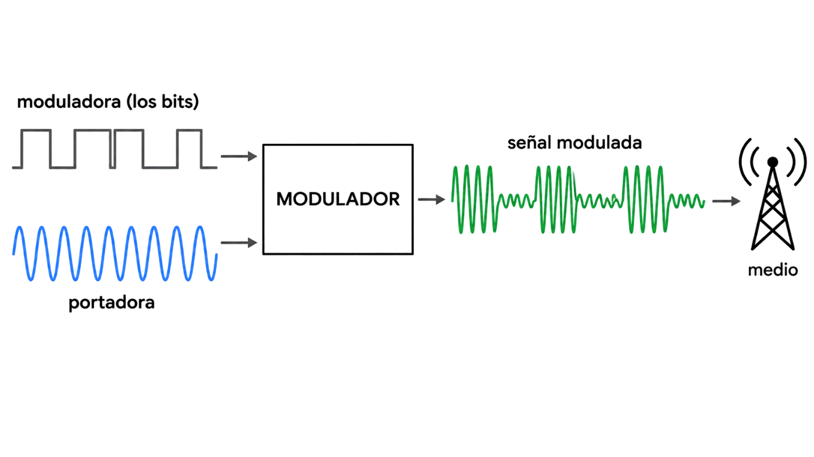
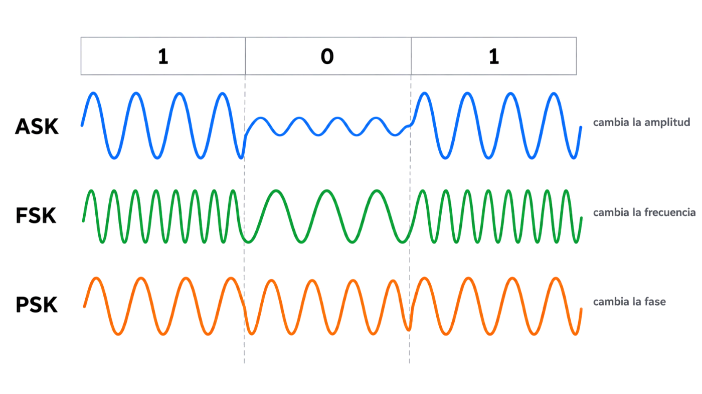
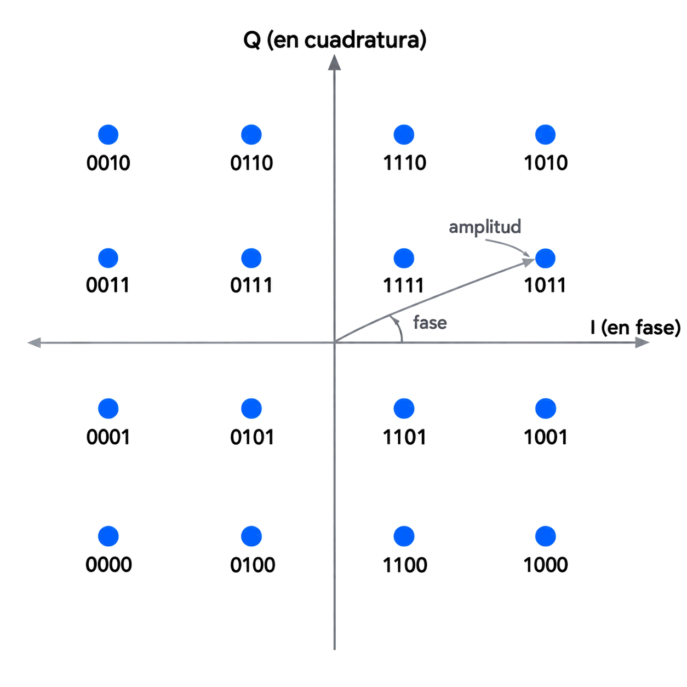

Hoy la solución: subir la información a una onda que sí viaja bien, y cambiarle algo en cada bit.
Contenido del día
1. Por qué modular
El libro de la asignatura cuenta el origen de forma muy clara. Cuando aparecieron las primeras redes de ordenadores no había infraestructura para unir sedes lejanas. Las empresas recurrieron a lo que ya existía: la red telefónica. El problema es que esa red estaba diseñada para transportar voz, es decir, señales analógicas.
Y el lunes viste lo que pasa al meter una señal digital por la línea telefónica: a partir de cierta velocidad, los armónicos no caben. La conclusión del libro es directa:
Es preferible modificarla para que ocupe menos ancho de banda y pueda transmitirse, a mayor velocidad, por medios de baja calidad. La técnica más importante para conseguirlo es la modulación.
Y hay un segundo motivo, todavía más evidente: por el aire no se puede enviar un escalón de tensión. Una antena solo radia bien ondas de una frecuencia concreta. Toda comunicación por radio, desde la FM hasta el Wi-Fi, es modulada.
2. Portadora, moduladora y módem
Modular es hacer que una señal controle una característica de otra. El libro lo define así:
| Señal | Qué es |
|---|---|
| Moduladora | La que lleva la información: en nuestro caso, los bits |
| Portadora | Una onda senoidal con las características que el medio necesita: la frecuencia adecuada para el cable o para la antena |
| Modulada | El resultado: lleva la información de la moduladora con las características de la portadora |

moduladora (los bits) ─┐
├──▶ [ MODULADOR ] ──▶ señal modulada ──▶ medio
portadora (senoidal) ──┘El aparato que hace esta conversión en los dos sentidos se llama módem: es MOdulador y DEModulador a la vez. Modula lo que envía y demodula lo que recibe para recuperar los bits.
El currículo de Cisco lo resume así: la modulación es el proceso por el que una característica de una onda, la señal, modifica a otra onda, la portadora.
3. Las tres formas: amplitud, frecuencia y fase
Una senoidal tiene tres parámetros. Cada uno da una forma de modular. En la radio clásica, con información analógica, se conocen como AM y FM. Con bits, sus versiones digitales tienen nombre propio:
| Técnica | Qué cambia | Un 1 | Un 0 |
|---|---|---|---|
| ASK — modulación por desplazamiento de amplitud | La amplitud | Una amplitud | Otra amplitud distinta |
| FSK — por desplazamiento de frecuencia | La frecuencia | Una frecuencia | Otra frecuencia distinta |
| PSK — por desplazamiento de fase | La fase | La onda tal cual | La onda desplazada |

bits 1 0 1
ASK ∿∿∿∿ ~~~~ ∿∿∿∿ el 0 con amplitud más pequeña
FSK ∿∿∿∿∿∿∿∿ ∿ ∿ ∿ ∿ ∿∿∿∿∿∿∿∿ el 1 con más ciclos por bit
PSK ∿∿∿∿ ∿∿∿∿ ∿∿∿∿ igual forma, pero el 0 empieza «al revés»El libro insiste en una idea que evita muchos errores: los valores concretos no importan. Se puede usar cualquier amplitud, cualquier frecuencia o cualquier desplazamiento para el 0 y el 1, siempre que sean distintos. Lo único prohibido en PSK es desplazar exactamente un periodo completo, porque la onda quedaría igual que al principio.
Compáralas en el modulador. Escribe tus propios bits y observa las tres filas:
4. Los cuatro casos de modulación
El libro clasifica la modulación según qué tipo de señal lleva la información y qué tipo de portadora se usa:
| Información | Portadora | Para qué se usa |
|---|---|---|
| Analógica | Analógica | Transmitir una señal analógica a otra frecuencia o con menos ancho de banda. La radio AM y FM |
| Digital | Analógica | Enviar bits por un medio analógico. La más común: el acceso a Internet por la red telefónica |
| Analógica | Digital | Enviar una señal analógica por una red digital, como la voz en la telefonía móvil digital |
| Digital | Digital | No existe como tal: se considera un caso de transmisión en banda base, lo de ayer |
ASK, FSK y PSK son casos de la segunda fila: bits sobre una portadora analógica.
5. Modulación multibit
Ayer viste que una señal con más niveles lleva más bits por símbolo. Con la modulación pasa lo mismo, y el libro lo llama modulación multibit: usar varios valores, o varios métodos a la vez, para meter más de un bit en cada intervalo.
Con dos amplitudes (A1 y A2) y dos frecuencias (F1 y F2) a la vez hay cuatro estados distintos: A1F1, A1F2, A2F1 y A2F2. Cuatro estados son dos bits por intervalo.
La regla es la misma de ayer, con otro nombre: con N estados posibles, cada símbolo lleva log2N bits.
| Estados | Bits por símbolo |
|---|---|
| 2 | 1 |
| 4 | 2 |
| 16 | 4 |
| 64 | 6 |
| 256 | 8 |
| 1 024 | 10 |
6. QAM y las constelaciones
La técnica multibit más importante es QAM, Quadrature Amplitude Modulation: modulación de amplitud en cuadratura. Cambia a la vez la amplitud y la fase.
El libro describe una QAM concreta que usa 12 fases distintas, cuatro de ellas con dos amplitudes, lo que da 8 + 4 × 2 = 16 combinaciones: 4 bits por intervalo.
Cómo se dibuja: la constelación
Para ver de un vistazo todos los estados se usa un diagrama llamado constelación. Cada símbolo posible es un punto:
- La distancia al centro es la amplitud.
- El ángulo es la fase.

Q
• • │ • • 16 puntos = 16 estados = 4 bits por símbolo
│
• • │ • • cada punto tiene su amplitud (distancia al centro)
───────────┼─────────── I y su fase (ángulo)
• • │ • •
│
• • │ • •El modulador de más arriba dibuja una QAM-16 en forma de rejilla de 4 × 4, que es la disposición habitual hoy. Escribe 8 bits y verás dos puntos numerados: son los dos símbolos que se envían.
💡 Ampliación: por qué la rejilla y por qué ese orden de etiquetas
La QAM del libro reparte los puntos en círculos. La que se usa hoy en Wi-Fi, en el cable y en la fibra hasta casa los coloca en una rejilla cuadrada, porque así los puntos quedan igual de separados y el receptor los distingue mejor.
Las etiquetas siguen un código Gray: dos puntos vecinos solo se diferencian en un bit. Si el ruido hace que el receptor confunda un punto con su vecino, solo se equivoca en un bit de los cuatro. Esta disposición procede de la documentación técnica de QAM, no de la bibliografía de la asignatura.
7. La modulación en tu Wi-Fi
El currículo de Cisco da dos pistas que ahora cobran sentido. La primera: las redes inalámbricas usan técnicas como DSSS y OFDM. La segunda: una de las propiedades del medio inalámbrico es la tasa adaptativa.
| Término | Qué es, en una frase |
|---|---|
| DSSS | Espectro ensanchado por secuencia directa: reparte cada bit en una banda ancha para resistir interferencias. Lo usaban las primeras redes Wi-Fi |
| OFDM | Multiplexación por división de frecuencia ortogonal: divide el canal en muchas portadoras estrechas, y cada una se modula por separado, normalmente con QAM |
| Tasa adaptativa | El equipo cambia de modulación según la calidad de la señal |
Y la tasa adaptativa es justo el aviso de antes llevado a la práctica. Cuando estás cerca del punto de acceso, la señal es limpia y se usa una constelación con muchos puntos: muchos bits por símbolo. Al alejarte, el ruido pesa más, el equipo cambia a una constelación con menos puntos y la velocidad baja. Por eso el Wi-Fi va más lento en la otra punta de casa, aunque siga conectado.
| Norma Wi-Fi | Técnica | Modulación máxima | Bits por símbolo |
|---|---|---|---|
| 802.11b | DSSS | — | — |
| 802.11a / g | OFDM | 64-QAM | 6 |
| 802.11n (Wi-Fi 4) | OFDM | 64-QAM | 6 |
| 802.11ac (Wi-Fi 5) | OFDM | 256-QAM | 8 |
| 802.11ax (Wi-Fi 6) | OFDM | 1024-QAM | 10 |
Esta tabla procede de las normas IEEE 802.11. La bibliografía de la asignatura nombra DSSS y OFDM, pero no da las modulaciones de cada norma.
8. Resumen y errores frecuentes
- Se modula cuando el medio no admite la señal en banda base: líneas de voz, radio.
- La moduladora lleva la información; la portadora, las características que necesita el medio. El módem hace los dos sentidos.
- ASK cambia la amplitud; FSK, la frecuencia; PSK, la fase.
- Bits sobre portadora analógica es el caso más común. Bits sobre portadora digital es banda base.
- Multibit: N estados llevan log2N bits por símbolo.
- QAM cambia amplitud y fase a la vez. En la constelación, la distancia al centro es la amplitud y el ángulo, la fase.
- Más puntos, más bits y más sensibilidad al ruido. El Wi-Fi lo gestiona con la tasa adaptativa.
| Se dice… | …pero en realidad |
|---|---|
| «Modular y codificar son lo mismo» | Codificar pone los bits en banda base; modular los sube a una portadora |
| «En ASK el 0 es ausencia de señal» | Puede serlo, pero basta con que la amplitud sea distinta |
| «En PSK cambia la frecuencia» | Cambia la fase. La frecuencia es la misma para el 0 y el 1 |
| «El módem sirve para conectarse a Internet» | Sirve para convertir entre digital y analógico en los dos sentidos |
| «QAM-16 lleva 16 bits» | Lleva 4: 16 es el número de estados |
| «Si el Wi-Fi baja de velocidad, se ha cortado» | Suele ser la tasa adaptativa: cambia a una modulación más robusta |
| «Cuantos más puntos en la constelación, mejor» | Solo si el canal es limpio: con ruido, los puntos se confunden |
9. Repaso con flashcards
Piensa la respuesta antes de girar la tarjeta.
Quiz del día
15 preguntas · 24 minutos · Contesta sin volver a la teoría
El cronómetro no corre mientras lees: arranca al llegar aquí, al pulsar «Empezar quiz» o al marcar tu primera respuesta.
Resultados
Respuestas correctas: 0 / 0
Respuestas incorrectas: 0
Con el modulador compararás las tres técnicas y leerás una constelación. Después averiguarás qué normas Wi-Fi admite tu adaptador y cuántos bits por símbolo puede usar cada una.
→ Ir al laboratorio del Día 3 (79 min)
Perturbaciones y capacidad: qué ensucia la señal, cómo se mide en decibelios y cuántos bits por segundo caben como máximo en un canal, según Nyquist y Shannon.
Tarea de calentamiento (5 min): si más puntos dan más bits, ¿por qué no usar un millón de puntos en la constelación? ¿Qué lo impide?